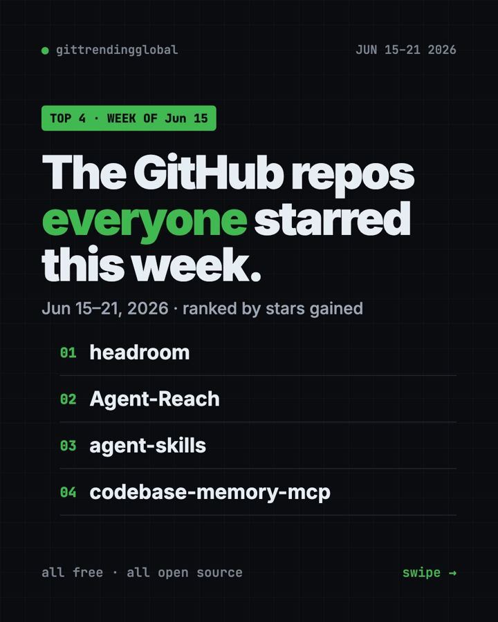
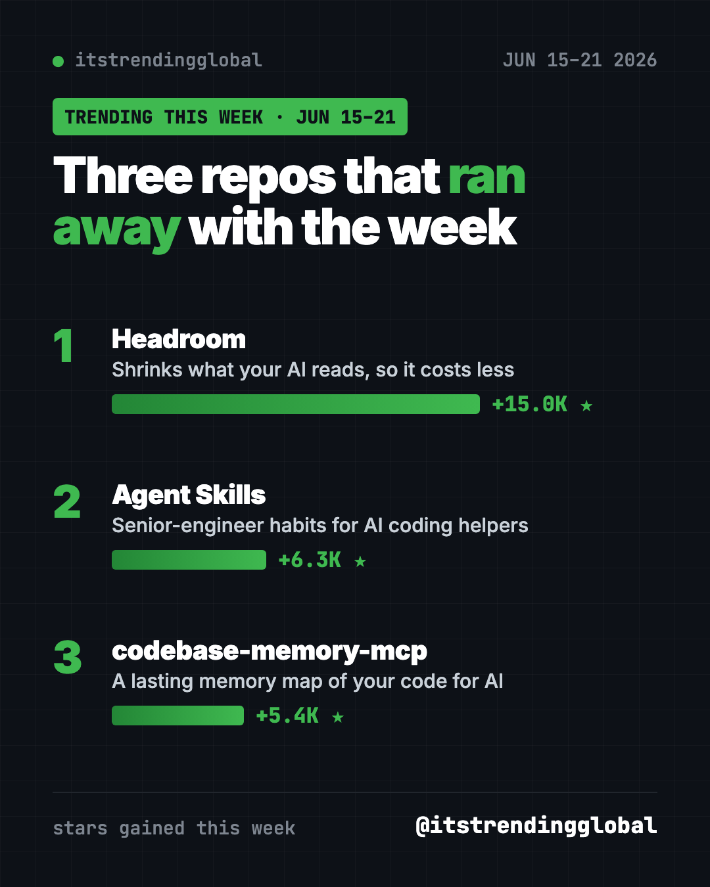
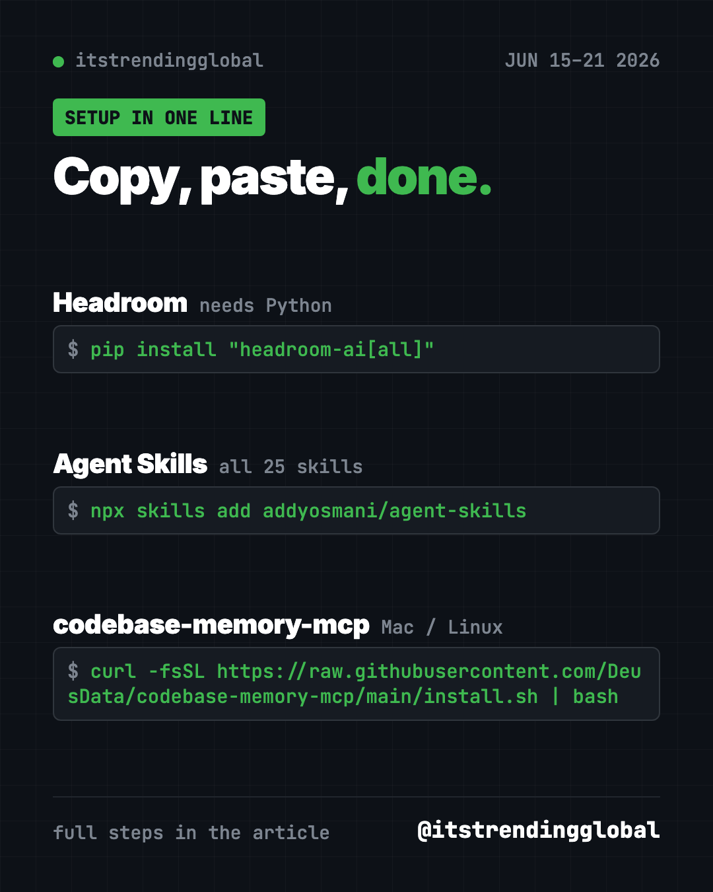

Home › Top repos › GitHub trending this week
Trending GitHub Repositories June 15-21, 2026
The trending GitHub repositories June 15-21, 2026: Headroom tops the week, plus Agent Skills and codebase-memory-mcp, explained simply with setup steps.

The trending GitHub repositories June 15-21, 2026 were led by Headroom, which gained 15,000 stars, its biggest week yet. Agent Skills and codebase-memory-mcp completed our list. All three are free tools that make AI coding helpers cheaper, smarter or more careful.
It was a short list on purpose. A fourth repo trended this week, but we left it out, and we explain why below. What's left has one thing in common: each one helps an AI helper do more while reading less.
Key takeaways
- Headroom gained +15.0K stars, its third week in a row on our list. It trims what your AI reads, on your own computer.
- Agent Skills came back with +6.3K. It teaches AI helpers to plan, test and review like a senior engineer.
- codebase-memory-mcp gives your AI helper a lasting map of your code across 162 programming languages.
- We skipped one trending repo because it relies on getting around websites' blocks.

This week's picks at a glance
| Repo | The job it does | Who should look | Stars this week | Install time |
|---|---|---|---|---|
| Headroom | Shrinks what the AI reads | Anyone paying for AI coding | +15.0K | About a minute |
| Agent Skills | Pro habits for AI helpers | People building apps with AI | +6.3K | One command |
| codebase-memory-mcp | A code map the AI keeps between chats | People with big projects | +5.4K | One command, then restart |
Star gains are for June 15-21 only. Totals were checked on October 16, 2026.
💡 Tip: You'll see "tokens" a lot this week. Tokens are the small chunks of text AI companies count and bill you for. Less reading means fewer tokens and a smaller bill.
1. Headroom: the week's runaway winner
Stars: +15.0K this week · about 75.4K total
What it is: Every time your AI helper reads a log, a data file or a long output, you pay for it. Headroom squeezes that material on your computer before it goes to the AI. The project says coding helpers use about 20% fewer tokens, and data files like JSON shrink by 60 to 95%. The answers stay the same.
Who it's for: Anyone who uses Claude Code or Codex for hours a day.
Everyday use: Ask your AI helper to read a huge error log. Headroom trims the repeats, so you pay for the useful parts.
Install it. You need Python. Copy and paste this:
pip install "headroom-ai[all]"
headroom wrap claude
headroom dashboard
The dashboard shows what you saved. Use headroom wrap codex for Codex.
Or ask your AI helper:
Install Headroom from github.com/headroomlabs-ai/headroom, wrap Claude Code, and explain the dashboard numbers to me in plain words.
See Headroom on GitHub · Read our full guide
2. Agent Skills: a senior engineer's checklist for AI
Stars: +6.3K this week · about 107K total
What it is: 25 skills from Addy Osmani that walk an AI helper through the full path of building software. There are commands for each stage, such as /spec to define the idea, /plan to break it down, and /ship to launch. It was also on the list the week before.
Who it's for: Beginners building their first app with AI, who don't know what steps they're skipping.
Everyday use: Run /review before you share your work, and get a careful second look.
Install it. Copy and paste this:
npx skills add addyosmani/agent-skills
Want to see the list first? Add --list to the end.
Or ask your AI helper:
Install Agent Skills from github.com/addyosmani/agent-skills and walk me through /spec and /plan for a small recipe website.

3. codebase-memory-mcp: a memory for your whole project
Stars: +5.4K this week · about 46.7K total
What it is: A free tool that indexes your code into a map your AI helper keeps between chats. It plugs in through MCP, a standard way to connect tools to AI helpers like Claude Code and Codex. The README reports about 120 times fewer tokens in its own five-question test. You can also explore the map in your browser.
Who it's for: People with large or old projects that an AI helper keeps getting lost in.
Everyday use: Ask "what breaks if I change this function?" and get the answer from the map.
Install it on Mac or Linux. Copy and paste this:
curl -fsSL https://raw.githubusercontent.com/DeusData/codebase-memory-mcp/main/install.sh | bash
Restart your AI helper, then say "Index this project." Windows users have a PowerShell installer in the README.
Or ask your AI helper:
Install codebase-memory-mcp from github.com/DeusData/codebase-memory-mcp, index this project, and show me its map in the browser.
⚠️ Heads up: The README says Microsoft Defender may flag the Windows file as a threat. The makers call it a false alarm and explain how to check the file yourself.
See codebase-memory-mcp on GitHub
The repo we didn't feature
Agent-Reach also trended this week, with +8.5K stars. It lets AI helpers read sites like X, Reddit and Xiaohongshu. Its README talks about getting past platform blocks and using your logged-in cookies. That can break a site's rules and put your accounts at risk, so we don't feature it.
Which one should you try first?
- Your AI bill worries you: start with Headroom. You'll see savings on day one.
- You're new to building with AI: Agent Skills gives you a safe routine.
- Your project is big and messy: codebase-memory-mcp gives your AI a lasting map.
Brand new to all three? Headroom is the gentlest start.
For more from this month, see the top GitHub repos of June 2026 and June 2026 in AI news. Then check the week of June 22.
FAQ
What were the trending GitHub repositories June 15-21, 2026?
Headroom led with about 15,000 new stars. Agent Skills and codebase-memory-mcp followed. Agent-Reach also trended, but we chose not to feature it.
Why is Headroom on the list three weeks running?
Its star count kept growing each week. AI coding bills are a common pain, and Headroom promises savings without changing your answers.
What is MCP?
MCP stands for Model Context Protocol. It's a common plug that lets AI helpers use outside tools, like a code map or a database.
Do these tools send my code anywhere?
Headroom and codebase-memory-mcp both run on your own computer. Your AI helper still sends what it reads to its AI company, as usual.
Want a new free tool explained every day? Follow @gittrendingglobal on Instagram.
📲 See this as a swipeable post on Instagram
Keep reading

Trending GitHub Repos October 2026: The Top 5 So Far
The trending GitHub repos of October 2026 so far: a free Photoshop-style editor, an AI art studio, a big AI model for gaming PCs and more, explained.

Trending GitHub Repos This Week, Oct 5 2026: The Top 5
Trending GitHub repos this week Oct 5 2026: Matt Pocock's skills, the openGym workout tracker, e2e testing, HyperFrames video and claude-mem memory.

GitHub Trending September 28, 2026: VoiceStudio Takes #1
GitHub trending September 28 2026: VoiceStudio, Hindsight, Paperclip, NVIDIA's OpenShell and a free 542-lesson AI course, with setup steps for each.